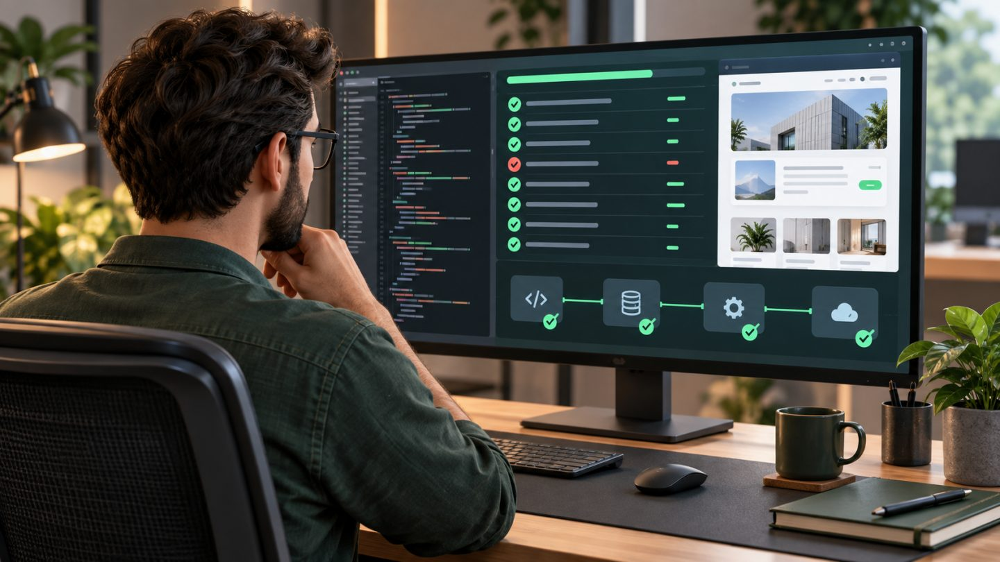

Automated Laravel Testing with Pest: From Your First Test to CI
Automated testing does not prove that software contains no bugs; it provides an early signal when important behavior changes unexpectedly. With Laravel and Pest, a team can begin with a few business-critical flows, write readable tests, and gradually build protection around the riskiest parts of the system.
Where should you start?
Do not make complete code coverage the first target. Prioritize behavior whose failure creates clear damage: authentication, authorization, ordering, payments, inventory, integration APIs, and defects that have already reached production.
| Test type | Best suited to | Characteristics |
|---|---|---|
| Unit | Calculations and isolated business rules | Fast, with few framework dependencies |
| Feature | HTTP, databases, middleware, and access control | Signals behavior close to the real application |
| Browser | Critical interface journeys | High value, but slower to maintain |
| Architecture | Structure and dependency rules | Prevents drift from agreed conventions |
Your first Pest test
<?php
it('redirects guests away from the dashboard', function () {
$response = $this->get('/dashboard');
$response->assertRedirect('/login');
});A test name should state an observable result. Avoid naming it after an internal method, because refactoring may change the method while preserving user-facing behavior.
Testing a database-backed flow
<?php
use App\Models\User;
use Illuminate\Foundation\Testing\RefreshDatabase;
uses(RefreshDatabase::class);
it('allows an active user to update their profile', function () {
$user = User::factory()->create(['is_active' => true]);
$response = $this->actingAs($user)->put('/profile', [
'name' => 'Alex Nguyen',
'email' => 'alex@example.test',
]);
$response->assertRedirect('/profile');
$this->assertDatabaseHas('users', [
'id' => $user->id,
'name' => 'Alex Nguyen',
]);
});RefreshDatabase lets every test start from controlled data. Factories create records whose intent is clearer than relying on data already present on a developer's computer.
Test success and rejection paths
Testing only valid input can leave serious gaps. For a profile endpoint, add cases for guests, invalid email, duplicate email, and suspended accounts. For authorization, verify both a role that has permission and one that does not.
A high-value test protects a business promise. It does not need to know how many methods a controller calls; it needs to prove that the right user receives the right result.
Keep tests stable and maintainable
- Use factory states such as
active()oradmin()so test data communicates intent. - Do not call real third-party APIs; fake mail, queues, notifications, storage, and HTTP clients.
- Freeze time when logic involves expiry or schedules.
- Never depend on test order; each test prepares its own state.
- Assert business outcomes instead of fragile HTML or internal structure.
Fake secondary work
use Illuminate\Support\Facades\Queue;
use App\Jobs\SendWelcomeEmail;
it('queues a welcome email after registration', function () {
Queue::fake();
$this->post('/register', [
'name' => 'Taylor',
'email' => 'taylor@example.test',
'password' => 'Strong-password-123',
'password_confirmation' => 'Strong-password-123',
])->assertRedirect('/dashboard');
Queue::assertPushed(SendWelcomeEmail::class);
});Run tests efficiently
php artisan test
php artisan test --stop-on-failure
php artisan test --filter=profile
php artisan test --parallel --processes=4Parallel execution can reduce feedback time, but tests must isolate resources. Shared files, fixed network ports, or external services can create intermittent failures between processes.
Put the suite in CI
name: tests
on: [push, pull_request]
jobs:
test:
runs-on: ubuntu-latest
steps:
- uses: actions/checkout@v4
- uses: shivammathur/setup-php@v2
with:
php-version: '8.3'
- run: composer install --no-interaction --prefer-dist
- run: cp .env.example .env
- run: php artisan key:generate
- run: php artisan testThis is a starting frame. Projects using MySQL, Redis, or browser testing need the corresponding services and configuration. Keep production secrets out of CI and use a separate test database.
Signs tests are becoming a burden
- Tests fail intermittently even when the code has not changed.
- A small interface adjustment breaks many unrelated tests.
- Fixtures are so large that readers cannot identify relevant data.
- Tests mock every layer and merely verify the current implementation.
- The suite is slow enough that developers skip it before pushing.
When these signs appear, reduce data, isolate external services, divide tests by level, and preserve a fast smoke suite. Removing duplicate tests is valuable maintenance too.
A practical adoption path
- Select three to five business flows with the highest risk.
- Write feature tests for success, validation, and authorization.
- Add a regression test whenever a production defect is fixed.
- Run the fast suite on every pull request.
- Track execution time and flaky failures.
- Add browser or architecture tests when their value is clear.
Conclusion
A useful test suite is not measured only by a coverage percentage. Its real value is detecting dangerous changes early, explaining failures clearly, and running quickly enough that the team uses it every day. With Laravel and Pest, begin with important behavior, control test data carefully, and let CI turn those promises into a repeatable quality check.